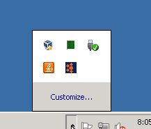
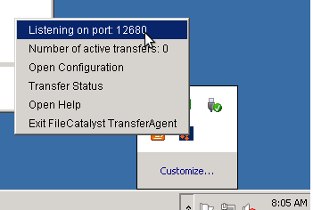
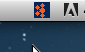
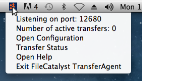

Overview
For the most part, your use of the TransferAgent should be seamless with downloads happening smoothly on websites that have integrated our FileCatalyst transfer technology. However, you may wish to do some configuration or find out status of the TransferAgent.
In order to do so, you must use the TransferAgent tray icon.
Finding the Tray Icon
Windows
By default, the system tray is found in the bottom right of your main screen from the "Desktop" view. Open the tray, and then right-click the TransferAgent icon to open the menu.
 
Mac OSX
On Mac OSX, you should be able to find the icon in your menu bar where you can left-click on it.
 
Menu items
Once the TransferAgent menu has been opened, a number of items are available to view or click:
Listening on port
The first menu item gives you the listening port. You may be asked to provide this information during initial configuration for each TransferAgent enabled site.
Number of active transfers
This line is informational only (clicking does nothing) and gives an at-a-glance count of how many transfers are currently active. If the user wishes to inspect them, they must click "Transfer Status".
Open Configuration
This opens a configuration page in your default browser.
Transfer Status
This shows the status of all current transfers in your default browser.
Open Help
This opens the TransferAgent help in your default browser.
Exit FileCatalyst TransferAgent
This will shut down the TransferAgent. If you visit a FileCatalyst enabled web page, your application will start again.